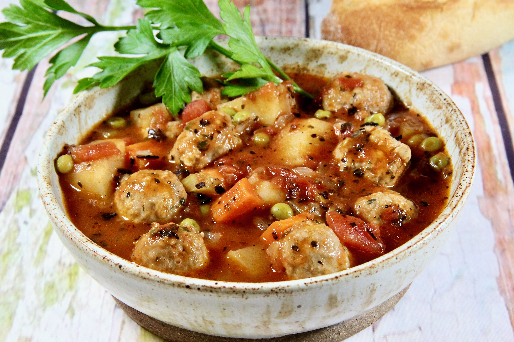

Turkey Meatble Stew

Description
A one-pot comfort food stew with a rich, savory broth, and loaded with fresh veggies and tender turkey meatballs.
Ingredients
- cooking spray
- turkey
- bread crumbs
- eggs
- garlic powder
- olive oil
- chepped onion
- potatoes
- frozen peas
Steps
- Preheat the oven to 375 degrees F (190 degrees C). Line a rimmed baking sheet with foil. Coat a wire rack with nonstick cooking spray, set on prepared baking sheet, and set aside.
- Combine ground turkey, bread crumbs, egg, parsley, Worcestershire sauce, garlic powder, Italian seasoning, onion powder, salt, and pepper in a large bowl. Using a 2-teaspoon cookie scoop, shape the mixture into 1-inch balls and place on the baking rack.
- Bake in the preheated oven until no longer pink in the center, about 12 minutes.
- Meanwhile, heat olive oil in a Dutch oven over medium heat. Add onion and celery and cook until softened, about 5 minutes. Add tomatoes, chicken broth, potatoes, carrots, peas, basil, and red pepper flakes; stir until well combined. Bring to a boil, reduce heat to medium-low, and simmer, uncovered, until potatoes and carrots are cooked and the broth has somewhat reduced, 20 to 25 minutes.
- Stir in meatballs and simmer until heated through, 5 to 7 minutes. Season stew with salt and pepper.